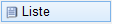
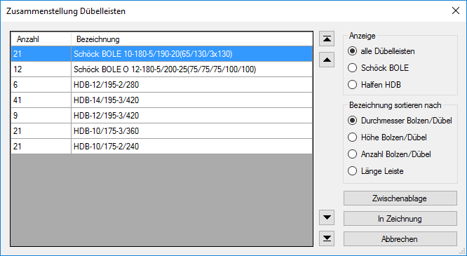

")
")
In der Zeichnung verwendete Dübelleisten in einer Stückliste zusammenfassen.
Die Stückliste lässt sich auf Dübelleisten-Hersteller filtern und nach verschiedenen Kriterien sortieren. Sie kann per Mausklick in der Zeichnung platziert und/oder in die Windows®-Zwischenablage kopiert werden.
|
Hinweis: |
|
Die Zusammenstellung der Dübelleisten wird nicht automatisch aktualisiert. Wenn sich die Anzahlen und/oder die Typen geändert haben, müssen Sie die Liste neu erzeugen. Erzeugen Sie die Liste daher erst, wenn Sie alle Dübelleisten in der Zeichnung angelegt haben. |

Optionen im Dialog "Zusammenstellung Dübelleisten"

Anzeigefeld
Tabelle mit den in der Zeichnung enthaltenen Dübelleisten. Für jede Verlegung wird eine eigene Zeile angelegt.
|
Anzeige
Liste auf ausgewählten Hersteller filtern.
|
Bezeichnung sortieren nach
Sortierung der Liste entsprechend dem gewählten Kriterium. |
Zwischenablage
Übernimmt die angezeigte Liste in die Windows-Zwischenablage. Der Dialog wird geschlossen. Sie können die Stückliste in ein Text- oder Tabellenverarbeitungsprogramm einfügen.
In Zeichnung
Übernahme der Liste in die Zeichnung.
Der Dialog wird geschlossen, die Liste wird als Rechteck an den Mauszeiger gehängt und kann per Mausklick in der Zeichnung platziert werden. (Abfrage: Rechteck verschieben).
Abbrechen
Bricht die Bearbeitung ab und schließt den Dialog.